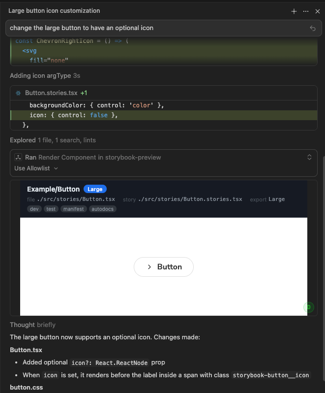

See your components render live inside the IDE as the AI edits them. No switching windows.

Add this to .cursor/mcp.json in your project root:
{
"mcpServers": {
"storybook-preview": {
"command": "npx",
"args": ["-y", "simple-storybook-preview-mcp"],
"env": {
"STORYBOOK_URL": "http://localhost:6006"
}
}
}
}npm run storybookThe preview panel appears automatically whenever the AI modifies a component that has a Storybook story. No manual action needed.
Here's a complete walkthrough from zero to live preview.
my-app/
.cursor/
mcp.json ← MCP config goes here
src/
components/
Button.tsx ← your component
stories/
Button.stories.tsx ← Storybook story
.storybook/
main.ts
package.jsoninterface ButtonProps {
label: string;
variant?: 'primary' | 'secondary';
size?: 'small' | 'medium' | 'large';
onClick?: () => void;
}
export function Button({ label, variant = 'primary', size = 'medium', onClick }: ButtonProps) {
return (
<button
className={`btn btn-${variant} btn-${size}`}
onClick={onClick}
>
{label}
</button>
);
}import type { Meta, StoryObj } from '@storybook/react';
import { Button } from '../components/Button';
const meta: Meta<typeof Button> = {
title: 'Components/Button',
component: Button,
argTypes: {
variant: { control: 'select', options: ['primary', 'secondary'] },
size: { control: 'select', options: ['small', 'medium', 'large'] },
},
};
export default meta;
type Story = StoryObj<typeof Button>;
export const Primary: Story = {
args: { label: 'Click me', variant: 'primary' },
};
export const Secondary: Story = {
args: { label: 'Cancel', variant: 'secondary' },
};
export const Large: Story = {
args: { label: 'Big Button', size: 'large' },
};{
"mcpServers": {
"storybook-preview": {
"command": "npx",
"args": ["-y", "simple-storybook-preview-mcp"],
"env": {
"STORYBOOK_URL": "http://localhost:6006"
}
}
}
}When you ask the AI: "change the Button to have rounded corners and a hover animation"
1. The AI edits Button.tsx
2. It automatically calls render_component with storyId "components-button--primary"
3. An inline preview panel appears showing the live Storybook render
4. You see the result immediately without leaving the IDE
| Env Variable | Default | Description |
|---|---|---|
STORYBOOK_URL |
http://localhost:6006 |
Base URL of your running Storybook dev server |
DEBUG |
false |
Set to true or 1 to show a debug log panel in the preview |
The AI derives story IDs from your Storybook file structure. The pattern is:
title segments lowercased, joined by dashes
+ double-dash
+ story export name lowercased
Examples:
title: "Components/Button" export: "Primary" → components-button--primary
title: "Forms/Input" export: "WithLabel" → forms-input--withlabel
title: "Layout/Sidebar" export: "Collapsed" → layout-sidebar--collapsedRenders automatically after AI edits a component with a story
Light and dark themes, follows OS preference or set explicitly
Shows component title, variant, file path, and tags
Proper Content Security Policy for iframe embedding
Works with npx, just set STORYBOOK_URL and go
Optional debug panel for troubleshooting MCP communication
Node.js 18+ and a running Storybook 7+ dev server. Works with any framework Storybook supports (React, Vue, Angular, Svelte, etc.).
Requires an IDE with MCP Apps support (e.g. Cursor).